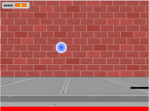

1.2 Variables and Data Types
Using Objects and Methods
Course Directory
Return to the course outline
Topic Intro
What is a variable?
A variable (变量) is a memory location in the computer that stores a value that can change while the program runs.

Pong score example
Scores often start at 0 and increase, so a score is a natural example of data stored in a variable.
Data Types
Name plus kind of value
Every variable has a name and a data type (数据类型). The type determines what kind of value the variable can hold.
int: whole numbers such as3,0,-76double: decimal numbers such as6.3,-0.9boolean: onlytrueorfalseString: a sequence of characters inside double quotes, such as"Hello"
Primitive and Reference Types
AP CSA vocabulary
- Primitive variables hold primitive values directly.
- AP CSA primitive types in this topic are
int,double, andboolean. - Reference variables hold a reference to an object.
Stringis a reference type and the name of a Java class.
A data type is a set of values and a set of operations on those values.
Quick Check
Choose the right type
For each situation, choose int, double, boolean, or String.
| Data to store | Best type | Reason |
|---|---|---|
| average grade for a course | double |
averages may have decimals |
| number of people in a household | int |
people are counted as whole numbers |
| first name of a person | String |
names are text |
| whether it is raining | boolean |
only true or false |
| amount of money | double |
cents may require decimals |
Declaring Variables
Type first, then name
To declare (声明) a variable, write the type, at least one space, the variable name, and a semicolon.
To initialize (初始化) a variable, give it its first value.
Memory and Type Size
Java reserves enough bits

Variable types and memory
- A bit stores
0or1. - An
intuses 32 bits. - A
doubleuses 64 bits. - Type affects storage and the operations Java allows.
Printing Variables
Print the value, not the name
Run the code and predict each output line.
public class Test2
{
public static void main(String[] args)
{
int score;
score = 0;
System.out.print("The score is ");
System.out.println(score);
double price = 23.25;
System.out.println("The price is " + price);
boolean won = false;
System.out.println(won);
won = true;
System.out.println(won);
String name = "Jose";
System.out.println("Hi " + name);
}
}Printing Variables
Expected output and common mistake
Expected output:
Never put variables inside quotes if you want their values. "name" prints the letters name; name prints the value stored in the variable.
Identify Declarations
Which lines create variables?
Find all variable declarations in the code.
Correct declaration lines: int numLives;, double health;, boolean powerUp;.
Identify Initializations
Which lines give the first value?
Find all variable initializations in the code.
Correct initialization lines: numLives = 0;, double health = 8.5;, boolean powerUp = true;.
Assignment Direction
Variable on the left, value on the right
In Java, = means “copy the value on the right into the memory location named on the left.”
Fix the assignment order.
Expected output:
Trace Checkpoints
Fill the blanks
Complete each checkpoint before writing code.
[blank] age = [blank];declaresageas an integer and sets it to5.- What type should you use for a shoe size like
8.5? - What type should you use for a number of tickets?
Answers: int age = 5;, double, int.
Mixed-Up Code
Declare three variables in order
Build the correct declarations for number of visits, temperature, and insurance status.
Needed blocks:
Distractors:
Reject the distractors because Java primitive type keywords are lowercase.
Naming Variables
Valid, meaningful, and readable
- Start with a letter.
- Use letters, digits, and
_. - Use one word with no spaces.
- Do not use Java keywords such as
for,if,class,static,int, ordouble. - Choose meaningful names;
scoreis clearer thanx.
Java convention is camelCase (驼峰命名), such as gameScore.
Case Sensitivity
Spelling and capitalization must match
Java is case-sensitive. gameScore and gamescore are different names.
Fix the code.
Expected output:
Camel Case Check
Name the variable
Give the camelCase variable name.
- variable that represents a shoe size
- variable that represents the top score
Answers:
Start with lowercase, then uppercase the first letter of each additional word.
Debugging Challenge
Weather Report starter code
Debug the code. Make sure data types match the values, names match exactly, strings close correctly, and statements end correctly.
public class Challenge1_2_weather
{
public static void main(String[] args)
{
int temperature = 70.5;
double tvChannel = 101;
boolean sunny = 1
System.out.print("Welcome to the weather report on Channel ")
System.out.println(TVchannel);
System.out.print("The temperature today is );
System.out.println(tempurature);
System.out.print("Is it sunny today? ");
System.out.println(sunny);
}
}Debugging Challenge
Weather Report target output
Your corrected program should produce this output.
Checklist:
temperatureshould be a type that can store70.5.tvChannelshould print as101, not101.0.sunnyshould betrueorfalse.tvChannelandtemperaturemust be spelled and capitalized consistently.
Coding Challenge
Mad Libs starter code
Replace each "Replace" value with a word that matches the variable name, then create another silly story using at least five new String variables.
public class MadLibs1
{
public static void main(String[] args)
{
String pluralnoun1 = "Replace";
String color1 = "Replace";
String color2 = "Replace";
String food = "Replace";
String pluralnoun2 = "Replace";
System.out.println("Roses are " + color1);
System.out.println(pluralnoun1 + " are " + color2);
System.out.println("I like " + food);
System.out.println("Do " + pluralnoun2 + " like them too?");
// Now come up with your own silly poem!
}
}Coding Challenge
Mad Libs completion checks
A successful classroom version should:
- replace all five
"Replace"placeholders - keep the variables outside quotes when printing their values
- print four poem lines from the starter
- add a new short story or poem using at least 5 new
Stringvariables - use meaningful variable names such as
animal,placeName, orfavoriteFood
Classroom Check
A complete answer should…
- define a variable as a named memory location whose value can change
- identify
int,double,boolean, andStringfrom the data being stored - distinguish primitive and reference types
- declare and initialize a variable using valid Java syntax
- explain why the variable must be on the left side of
= - print variable values without placing variable names inside quotes
- use meaningful camelCase names with exact capitalization